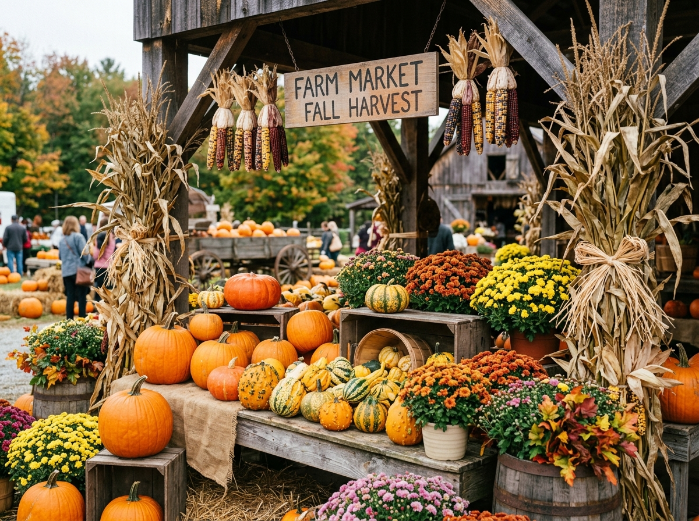
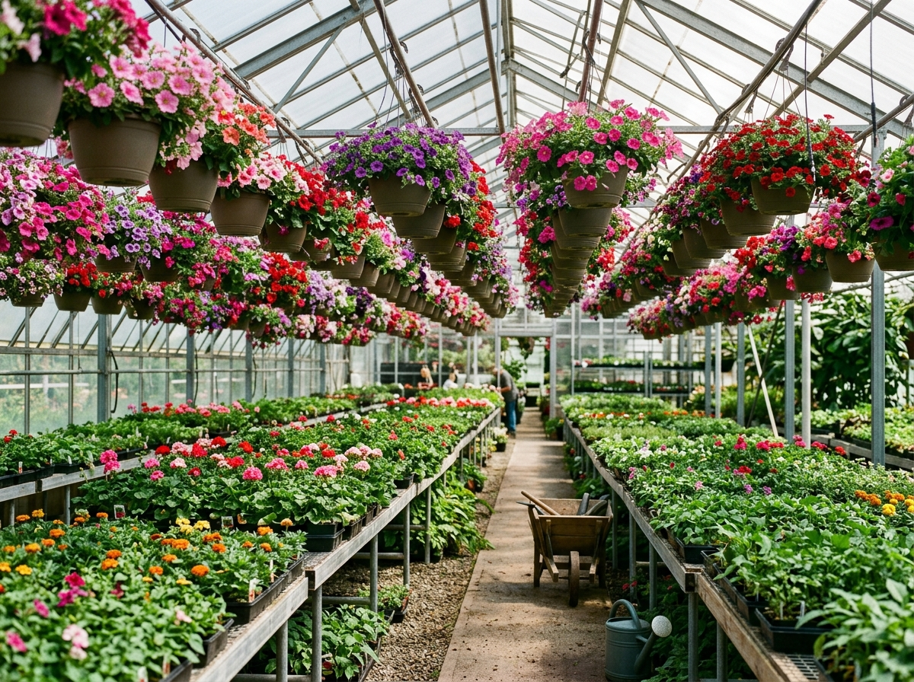
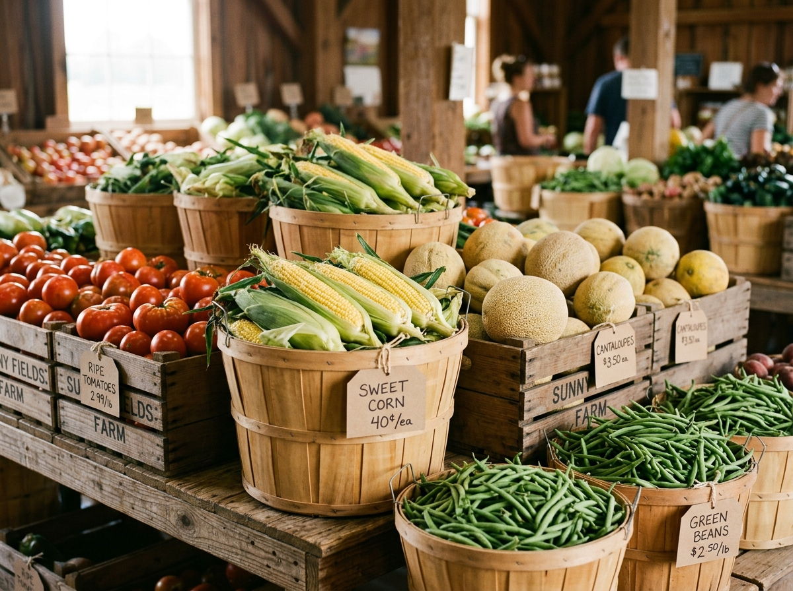
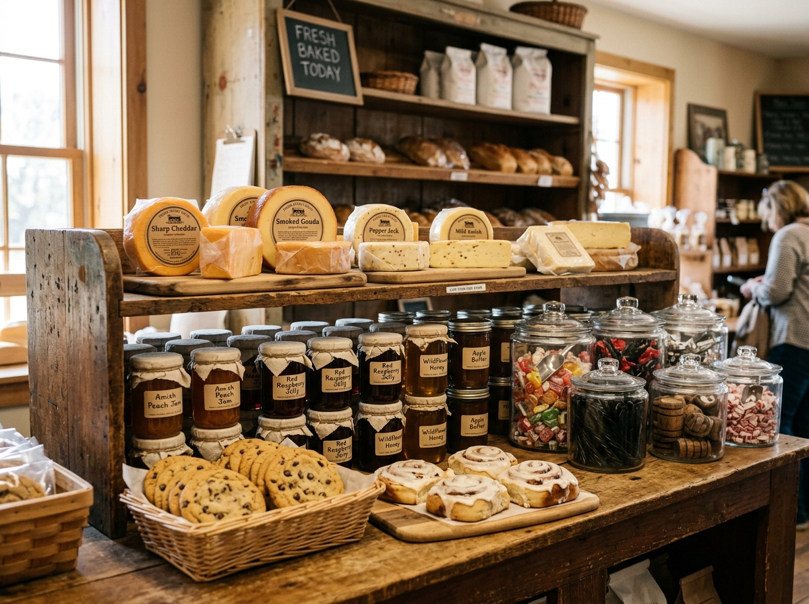

On the SR 3 corridor in LaOtto, just north of Huntertown — about fifteen minutes from Fort Wayne's north side.
Hours & Contact
| Monday – Saturday | 9:00 AM – 6:00 PM |
| Sunday | 11:00 AM – 6:00 PM |
Huntertown Gardens
14 County Road 70, LaOtto, IN 46763
Free parking · wheelchair accessible · major cards accepted
Make a morning of it

Wander the rows and take home a basket — spring's favorite errand.

Corn for tonight, tomatoes for canning, peaches for the weekend.

Amish cheese, a jar of jam, a bag of old-fashioned candy for the ride home.